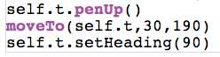
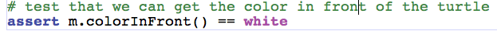

| This code moves the turtle to the proper location and allows the test to pass. |  |
| To solve the maze we need to move the turtle. To move a turtle there is a method called forward. In solving the maze we want to be able to know when the turtle can and can not move. The turtle should not move through walls! We will detect a wall by looking in the image at a spot just before the turtle. For this we will create a method in Maze called colorInFront. We use getPixelAt and getColor to determine if we are hitting a wall. When we call getPixelAt we want to give it coordinates in front of the turtle. There are two methods for the Turtle object which give us the coordinates of the turtle; getXPos and getYPos. |
 |